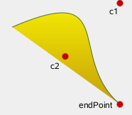

QPainterPath Class
The QPainterPath class provides a container for painting operations, enabling graphical shapes to be constructed and reused. More...
| Header: | #include <QPainterPath> |
| CMake: | find_package(Qt6 REQUIRED COMPONENTS Gui) target_link_libraries(mytarget PRIVATE Qt6::Gui) |
| qmake: | QT += gui |
- List of all members, including inherited members
- QPainterPath is part of Painting Classes and Implicitly Shared Classes.
Public Types
| class | Element |
| enum | ElementType { MoveToElement, LineToElement, CurveToElement, CurveToDataElement } |
Public Functions
| QPainterPath() | |
| QPainterPath(const QPointF &startPoint) | |
| QPainterPath(const QPainterPath &path) | |
| ~QPainterPath() | |
| void | addEllipse(const QRectF &boundingRectangle) |
| void | addEllipse(qreal x, qreal y, qreal width, qreal height) |
| void | addEllipse(const QPointF ¢er, qreal rx, qreal ry) |
| void | addPath(const QPainterPath &path) |
| void | addPolygon(const QPolygonF &polygon) |
| void | addRect(const QRectF &rectangle) |
| void | addRect(qreal x, qreal y, qreal width, qreal height) |
| void | addRegion(const QRegion ®ion) |
| void | addRoundedRect(const QRectF &rect, qreal xRadius, qreal yRadius, Qt::SizeMode mode = Qt::AbsoluteSize) |
| void | addRoundedRect(qreal x, qreal y, qreal w, qreal h, qreal xRadius, qreal yRadius, Qt::SizeMode mode = Qt::AbsoluteSize) |
| void | addText(const QPointF &point, const QFont &font, const QString &text) |
| void | addText(qreal x, qreal y, const QFont &font, const QString &text) |
| qreal | angleAtPercent(qreal t) const |
| void | arcMoveTo(const QRectF &rectangle, qreal angle) |
| void | arcMoveTo(qreal x, qreal y, qreal width, qreal height, qreal angle) |
| void | arcTo(const QRectF &rectangle, qreal startAngle, qreal sweepLength) |
| void | arcTo(qreal x, qreal y, qreal width, qreal height, qreal startAngle, qreal sweepLength) |
| QRectF | boundingRect() const |
| int | capacity() const |
| void | clear() |
| void | closeSubpath() |
| void | connectPath(const QPainterPath &path) |
| bool | contains(const QPointF &point) const |
| bool | contains(const QRectF &rectangle) const |
| bool | contains(const QPainterPath &p) const |
| QRectF | controlPointRect() const |
| void | cubicTo(const QPointF &c1, const QPointF &c2, const QPointF &endPoint) |
| void | cubicTo(qreal c1X, qreal c1Y, qreal c2X, qreal c2Y, qreal endPointX, qreal endPointY) |
| QPointF | currentPosition() const |
| QPainterPath::Element | elementAt(int index) const |
| int | elementCount() const |
| Qt::FillRule | fillRule() const |
| QPainterPath | intersected(const QPainterPath &p) const |
| bool | intersects(const QRectF &rectangle) const |
| bool | intersects(const QPainterPath &p) const |
| bool | isEmpty() const |
| qreal | length() const |
| void | lineTo(const QPointF &endPoint) |
| void | lineTo(qreal x, qreal y) |
| void | moveTo(const QPointF &point) |
| void | moveTo(qreal x, qreal y) |
| qreal | percentAtLength(qreal len) const |
| QPointF | pointAtPercent(qreal t) const |
| void | quadTo(const QPointF &c, const QPointF &endPoint) |
| void | quadTo(qreal cx, qreal cy, qreal endPointX, qreal endPointY) |
| void | reserve(int size) |
| void | setElementPositionAt(int index, qreal x, qreal y) |
| void | setFillRule(Qt::FillRule fillRule) |
| QPainterPath | simplified() const |
| qreal | slopeAtPercent(qreal t) const |
| QPainterPath | subtracted(const QPainterPath &p) const |
| void | swap(QPainterPath &other) |
| QPolygonF | toFillPolygon(const QTransform &matrix = QTransform()) const |
| QList<QPolygonF> | toFillPolygons(const QTransform &matrix = QTransform()) const |
| QPainterPath | toReversed() const |
| QList<QPolygonF> | toSubpathPolygons(const QTransform &matrix = QTransform()) const |
| void | translate(qreal dx, qreal dy) |
| void | translate(const QPointF &offset) |
| QPainterPath | translated(qreal dx, qreal dy) const |
| QPainterPath | translated(const QPointF &offset) const |
| QPainterPath | united(const QPainterPath &p) const |
| bool | operator!=(const QPainterPath &path) const |
| QPainterPath | operator&(const QPainterPath &other) const |
| QPainterPath & | operator&=(const QPainterPath &other) |
| QPainterPath | operator+(const QPainterPath &other) const |
| QPainterPath & | operator+=(const QPainterPath &other) |
| QPainterPath | operator-(const QPainterPath &other) const |
| QPainterPath & | operator-=(const QPainterPath &other) |
| QPainterPath & | operator=(const QPainterPath &path) |
| QPainterPath & | operator=(QPainterPath &&other) |
| bool | operator==(const QPainterPath &path) const |
| QPainterPath | operator|(const QPainterPath &other) const |
| QPainterPath & | operator|=(const QPainterPath &other) |
Related Non-Members
| QDataStream & | operator<<(QDataStream &stream, const QPainterPath &path) |
| QDataStream & | operator>>(QDataStream &stream, QPainterPath &path) |
Detailed Description
A painter path is an object composed of a number of graphical building blocks, such as rectangles, ellipses, lines, and curves. Building blocks can be joined in closed subpaths, for example as a rectangle or an ellipse. A closed path has coinciding start and end points. Or they can exist independently as unclosed subpaths, such as lines and curves.
A QPainterPath object can be used for filling, outlining, and clipping. To generate fillable outlines for a given painter path, use the QPainterPathStroker class. The main advantage of painter paths over normal drawing operations is that complex shapes only need to be created once; then they can be drawn many times using only calls to the QPainter::drawPath() function.
QPainterPath provides a collection of functions that can be used to obtain information about the path and its elements. In addition it is possible to reverse the order of the elements using the toReversed() function. There are also several functions to convert this painter path object into a polygon representation.
Composing a QPainterPath
A QPainterPath object can be constructed as an empty path, with a given start point, or as a copy of another QPainterPath object. Once created, lines and curves can be added to the path using the lineTo(), arcTo(), cubicTo() and quadTo() functions. The lines and curves stretch from the currentPosition() to the position passed as argument.
The currentPosition() of the QPainterPath object is always the end position of the last subpath that was added (or the initial start point). Use the moveTo() function to move the currentPosition() without adding a component. The moveTo() function implicitly starts a new subpath, and closes the previous one. Another way of starting a new subpath is to call the closeSubpath() function which closes the current path by adding a line from the currentPosition() back to the path's start position. Note that the new path will have (0, 0) as its initial currentPosition().
QPainterPath class also provides several convenience functions to add closed subpaths to a painter path: addEllipse(), addPath(), addRect(), addRegion() and addText(). The addPolygon() function adds an unclosed subpath. In fact, these functions are all collections of moveTo(), lineTo() and cubicTo() operations.
In addition, a path can be added to the current path using the connectPath() function. But note that this function will connect the last element of the current path to the first element of given one by adding a line.
Below is a code snippet that shows how a QPainterPath object can be used:
 | QPainterPath path; path.addRect(20, 20, 60, 60); path.moveTo(0, 0); path.cubicTo(99, 0, 50, 50, 99, 99); path.cubicTo(0, 99, 50, 50, 0, 0); QPainter painter(this); painter.fillRect(0, 0, 100, 100, Qt::white); painter.setPen(QPen(QColor(79, 106, 25), 1, Qt::SolidLine, Qt::FlatCap, Qt::MiterJoin)); painter.setBrush(QColor(122, 163, 39)); painter.drawPath(path); |
The painter path is initially empty when constructed. We first add a rectangle, which is a closed subpath. Then we add two bezier curves which together form a closed subpath even though they are not closed individually. Finally we draw the entire path. The path is filled using the default fill rule, Qt::OddEvenFill. Qt provides two methods for filling paths:
See the Qt::FillRule documentation for the definition of the rules. A painter path's currently set fill rule can be retrieved using the fillRule() function, and altered using the setFillRule() function.
QPainterPath Information
The QPainterPath class provides a collection of functions that returns information about the path and its elements.
The currentPosition() function returns the end point of the last subpath that was added (or the initial start point). The elementAt() function can be used to retrieve the various subpath elements, the number of elements can be retrieved using the elementCount() function, and the isEmpty() function tells whether this QPainterPath object contains any elements at all.
The controlPointRect() function returns the rectangle containing all the points and control points in this path. This function is significantly faster to compute than the exact boundingRect() which returns the bounding rectangle of this painter path with floating point precision.
Finally, QPainterPath provides the contains() function which can be used to determine whether a given point or rectangle is inside the path, and the intersects() function which determines if any of the points inside a given rectangle also are inside this path.
QPainterPath Conversion
For compatibility reasons, it might be required to simplify the representation of a painter path: QPainterPath provides the toFillPolygon(), toFillPolygons() and toSubpathPolygons() functions which convert the painter path into a polygon. The toFillPolygon() returns the painter path as one single polygon, while the two latter functions return a list of polygons.
The toFillPolygons() and toSubpathPolygons() functions are provided because it is usually faster to draw several small polygons than to draw one large polygon, even though the total number of points drawn is the same. The difference between the two is the number of polygons they return: The toSubpathPolygons() creates one polygon for each subpath regardless of intersecting subpaths (i.e. overlapping bounding rectangles), while the toFillPolygons() functions creates only one polygon for overlapping subpaths.
The toFillPolygon() and toFillPolygons() functions first convert all the subpaths to polygons, then uses a rewinding technique to make sure that overlapping subpaths can be filled using the correct fill rule. Note that rewinding inserts additional lines in the polygon so the outline of the fill polygon does not match the outline of the path.
Examples
Qt provides the Painter Paths Example and the Vector Deformation example which are located in Qt's example directory.
The Painter Paths Example shows how painter paths can be used to build complex shapes for rendering and lets the user experiment with the filling and stroking. The Vector Deformation Example shows how to use QPainterPath to draw text.


See also QPainterPathStroker, QPainter, QRegion, and Painter Paths Example.
Member Type Documentation
enum QPainterPath::ElementType
This enum describes the types of elements used to connect vertices in subpaths.
Note that elements added as closed subpaths using the addEllipse(), addPath(), addPolygon(), addRect(), addRegion() and addText() convenience functions, is actually added to the path as a collection of separate elements using the moveTo(), lineTo() and cubicTo() functions.
| Constant | Value | Description |
|---|---|---|
QPainterPath::MoveToElement | 0 | A new subpath. See also moveTo(). |
QPainterPath::LineToElement | 1 | A line. See also lineTo(). |
QPainterPath::CurveToElement | 2 | A curve. See also cubicTo() and quadTo(). |
QPainterPath::CurveToDataElement | 3 | The extra data required to describe a curve in a CurveToElement element. |
See also elementAt() and elementCount().
Member Function Documentation
[noexcept] QPainterPath::QPainterPath()
Constructs an empty QPainterPath object.
[explicit] QPainterPath::QPainterPath(const QPointF &startPoint)
Creates a QPainterPath object with the given startPoint as its current position.
QPainterPath::QPainterPath(const QPainterPath &path)
Creates a QPainterPath object that is a copy of the given path.
See also operator=().
[noexcept] QPainterPath::~QPainterPath()
Destroys this QPainterPath object.
void QPainterPath::addEllipse(const QRectF &boundingRectangle)
Creates an ellipse within the specified boundingRectangle and adds it to the painter path as a closed subpath.
The ellipse is composed of a clockwise curve, starting and finishing at zero degrees (the 3 o'clock position).
 | QLinearGradient myGradient; QPen myPen; QRectF boundingRectangle; QPainterPath myPath; myPath.addEllipse(boundingRectangle); QPainter painter(this); painter.setBrush(myGradient); painter.setPen(myPen); painter.drawPath(myPath); |
See also arcTo(), QPainter::drawEllipse(), and Composing a QPainterPath.
void QPainterPath::addEllipse(qreal x, qreal y, qreal width, qreal height)
This is an overloaded function.
Creates an ellipse within the bounding rectangle defined by its top-left corner at (x, y), width and height, and adds it to the painter path as a closed subpath.
void QPainterPath::addEllipse(const QPointF ¢er, qreal rx, qreal ry)
This is an overloaded function.
Creates an ellipse positioned at center with radii rx and ry, and adds it to the painter path as a closed subpath.
void QPainterPath::addPath(const QPainterPath &path)
Adds the given path to this path as a closed subpath.
See also connectPath() and Composing a QPainterPath.
void QPainterPath::addPolygon(const QPolygonF &polygon)
Adds the given polygon to the path as an (unclosed) subpath.
Note that the current position after the polygon has been added, is the last point in polygon. To draw a line back to the first point, use the closeSubpath() function.
 | QLinearGradient myGradient; QPen myPen; QPolygonF myPolygon; QPainterPath myPath; myPath.addPolygon(myPolygon); QPainter painter(this); painter.setBrush(myGradient); painter.setPen(myPen); painter.drawPath(myPath); |
See also lineTo() and Composing a QPainterPath.
void QPainterPath::addRect(const QRectF &rectangle)
Adds the given rectangle to this path as a closed subpath.
The rectangle is added as a clockwise set of lines. The painter path's current position after the rectangle has been added is at the top-left corner of the rectangle.
 | QLinearGradient myGradient; QPen myPen; QRectF myRectangle; QPainterPath myPath; myPath.addRect(myRectangle); QPainter painter(this); painter.setBrush(myGradient); painter.setPen(myPen); painter.drawPath(myPath); |
See also addRegion(), lineTo(), and Composing a QPainterPath.
void QPainterPath::addRect(qreal x, qreal y, qreal width, qreal height)
This is an overloaded function.
Adds a rectangle at position (x, y), with the given width and height, as a closed subpath.
void QPainterPath::addRegion(const QRegion ®ion)
Adds the given region to the path by adding each rectangle in the region as a separate closed subpath.
See also addRect() and Composing a QPainterPath.
void QPainterPath::addRoundedRect(const QRectF &rect, qreal xRadius, qreal yRadius, Qt::SizeMode mode = Qt::AbsoluteSize)
Adds the given rectangle rect with rounded corners to the path.
The xRadius and yRadius arguments specify the radii of the ellipses defining the corners of the rounded rectangle. When mode is Qt::RelativeSize, xRadius and yRadius are specified in percentage of half the rectangle's width and height respectively, and should be in the range 0.0 to 100.0.
See also addRect().
void QPainterPath::addRoundedRect(qreal x, qreal y, qreal w, qreal h, qreal xRadius, qreal yRadius, Qt::SizeMode mode = Qt::AbsoluteSize)
This is an overloaded function.
Adds the given rectangle x, y, w, h with rounded corners to the path.
void QPainterPath::addText(const QPointF &point, const QFont &font, const QString &text)
Adds the given text to this path as a set of closed subpaths created from the font supplied. The subpaths are positioned so that the left end of the text's baseline lies at the specified point.
Some fonts may yield overlapping subpaths and will require the Qt::WindingFill fill rule for correct rendering.
 | QLinearGradient myGradient; QPen myPen; QFont myFont; QPointF baseline(x, y); QPainterPath myPath; myPath.addText(baseline, myFont, tr("Qt")); QPainter painter(this); painter.setBrush(myGradient); painter.setPen(myPen); painter.drawPath(myPath); |
See also QPainter::drawText(), Composing a QPainterPath, and setFillRule().
void QPainterPath::addText(qreal x, qreal y, const QFont &font, const QString &text)
This is an overloaded function.
Adds the given text to this path as a set of closed subpaths created from the font supplied. The subpaths are positioned so that the left end of the text's baseline lies at the point specified by (x, y).
qreal QPainterPath::angleAtPercent(qreal t) const
Returns the angle of the path tangent at the percentage t. The argument t has to be between 0 and 1.
Positive values for the angles mean counter-clockwise while negative values mean the clockwise direction. Zero degrees is at the 3 o'clock position.
Note that similarly to the other percent methods, the percentage measurement is not linear with regards to the length if curves are present in the path. When curves are present the percentage argument is mapped to the t parameter of the Bezier equations.
void QPainterPath::arcMoveTo(const QRectF &rectangle, qreal angle)
Creates a move to that lies on the arc that occupies the given rectangle at angle.
Angles are specified in degrees. Clockwise arcs can be specified using negative angles.
See also moveTo() and arcTo().
void QPainterPath::arcMoveTo(qreal x, qreal y, qreal width, qreal height, qreal angle)
This is an overloaded function.
Creates a move to that lies on the arc that occupies the QRectF(x, y, width, height) at angle.
void QPainterPath::arcTo(const QRectF &rectangle, qreal startAngle, qreal sweepLength)
Creates an arc that occupies the given rectangle, beginning at the specified startAngle and extending sweepLength degrees counter-clockwise.
Angles are specified in degrees. Clockwise arcs can be specified using negative angles.
Note that this function connects the starting point of the arc to the current position if they are not already connected. After the arc has been added, the current position is the last point in arc. To draw a line back to the first point, use the closeSubpath() function.
 | QPainterPath myPath; myPath.moveTo(center); myPath.arcTo(boundingRect, startAngle, sweepLength); QPainter painter(this); painter.setBrush(myGradient); painter.setPen(myPen); painter.drawPath(myPath); |
See also arcMoveTo(), addEllipse(), QPainter::drawArc(), QPainter::drawPie(), and Composing a QPainterPath.
void QPainterPath::arcTo(qreal x, qreal y, qreal width, qreal height, qreal startAngle, qreal sweepLength)
This is an overloaded function.
Creates an arc that occupies the rectangle QRectF(x, y, width, height), beginning at the specified startAngle and extending sweepLength degrees counter-clockwise.
QRectF QPainterPath::boundingRect() const
Returns the bounding rectangle of this painter path as a rectangle with floating point precision.
See also controlPointRect().
int QPainterPath::capacity() const
Returns the number of elements allocated by the QPainterPath.
See also clear() and reserve().
void QPainterPath::clear()
Clears the path elements stored.
This allows the path to reuse previous memory allocations.
See also reserve() and capacity().
void QPainterPath::closeSubpath()
Closes the current subpath by drawing a line to the beginning of the subpath, automatically starting a new path. The current point of the new path is (0, 0).
If the subpath does not contain any elements, this function does nothing.
See also moveTo() and Composing a QPainterPath.
void QPainterPath::connectPath(const QPainterPath &path)
Connects the given path to this path by adding a line from the last element of this path to the first element of the given path.
See also addPath() and Composing a QPainterPath.
bool QPainterPath::contains(const QPointF &point) const
Returns true if the given point is inside the path, otherwise returns false.
See also intersects().
bool QPainterPath::contains(const QRectF &rectangle) const
Returns true if the given rectangle is inside the path, otherwise returns false.
bool QPainterPath::contains(const QPainterPath &p) const
Returns true if the given path p is contained within the current path. Returns false if any edges of the current path and p intersect.
Set operations on paths will treat the paths as areas. Non-closed paths will be treated as implicitly closed.
See also intersects().
QRectF QPainterPath::controlPointRect() const
Returns the rectangle containing all the points and control points in this path.
This function is significantly faster to compute than the exact boundingRect(), and the returned rectangle is always a superset of the rectangle returned by boundingRect().
See also boundingRect().
void QPainterPath::cubicTo(const QPointF &c1, const QPointF &c2, const QPointF &endPoint)
Adds a cubic Bezier curve between the current position and the given endPoint using the control points specified by c1, and c2.
After the curve is added, the current position is updated to be at the end point of the curve.
|  | QLinearGradient myGradient; QPen myPen; QPainterPath myPath; myPath.cubicTo(c1, c2, endPoint); QPainter painter(this); painter.setBrush(myGradient); painter.setPen(myPen); painter.drawPath(myPath); |
See also quadTo() and Composing a QPainterPath.
void QPainterPath::cubicTo(qreal c1X, qreal c1Y, qreal c2X, qreal c2Y, qreal endPointX, qreal endPointY)
This is an overloaded function.
Adds a cubic Bezier curve between the current position and the end point (endPointX, endPointY) with control points specified by (c1X, c1Y) and (c2X, c2Y).
QPointF QPainterPath::currentPosition() const
Returns the current position of the path.
QPainterPath::Element QPainterPath::elementAt(int index) const
Returns the element at the given index in the painter path.
See also ElementType, elementCount(), and isEmpty().
int QPainterPath::elementCount() const
Returns the number of path elements in the painter path.
See also ElementType, elementAt(), and isEmpty().
Qt::FillRule QPainterPath::fillRule() const
Returns the painter path's currently set fill rule.
See also setFillRule().
QPainterPath QPainterPath::intersected(const QPainterPath &p) const
Returns a path which is the intersection of this path's fill area and p's fill area. Bezier curves may be flattened to line segments due to numerical instability of doing bezier curve intersections.
bool QPainterPath::intersects(const QRectF &rectangle) const
Returns true if any point in the given rectangle intersects the path; otherwise returns false.
There is an intersection if any of the lines making up the rectangle crosses a part of the path or if any part of the rectangle overlaps with any area enclosed by the path. This function respects the current fillRule to determine what is considered inside the path.
See also contains().
bool QPainterPath::intersects(const QPainterPath &p) const
Returns true if the current path intersects at any point the given path p. Also returns true if the current path contains or is contained by any part of p.
Set operations on paths will treat the paths as areas. Non-closed paths will be treated as implicitly closed.
See also contains().
bool QPainterPath::isEmpty() const
Returns true if either there are no elements in this path, or if the only element is a MoveToElement; otherwise returns false.
See also elementCount().
qreal QPainterPath::length() const
Returns the length of the current path.
void QPainterPath::lineTo(const QPointF &endPoint)
Adds a straight line from the current position to the given endPoint. After the line is drawn, the current position is updated to be at the end point of the line.
See also addPolygon(), addRect(), and Composing a QPainterPath.
void QPainterPath::lineTo(qreal x, qreal y)
This is an overloaded function.
Draws a line from the current position to the point (x, y).
void QPainterPath::moveTo(const QPointF &point)
Moves the current point to the given point, implicitly starting a new subpath and closing the previous one.
See also closeSubpath() and Composing a QPainterPath.
void QPainterPath::moveTo(qreal x, qreal y)
This is an overloaded function.
Moves the current position to (x, y) and starts a new subpath, implicitly closing the previous path.
qreal QPainterPath::percentAtLength(qreal len) const
Returns percentage of the whole path at the specified length len.
Note that similarly to other percent methods, the percentage measurement is not linear with regards to the length, if curves are present in the path. When curves are present the percentage argument is mapped to the t parameter of the Bezier equations.
QPointF QPainterPath::pointAtPercent(qreal t) const
Returns the point at at the percentage t of the current path. The argument t has to be between 0 and 1.
Note that similarly to other percent methods, the percentage measurement is not linear with regards to the length, if curves are present in the path. When curves are present the percentage argument is mapped to the t parameter of the Bezier equations.
void QPainterPath::quadTo(const QPointF &c, const QPointF &endPoint)
Adds a quadratic Bezier curve between the current position and the given endPoint with the control point specified by c.
After the curve is added, the current point is updated to be at the end point of the curve.
See also cubicTo() and Composing a QPainterPath.
void QPainterPath::quadTo(qreal cx, qreal cy, qreal endPointX, qreal endPointY)
This is an overloaded function.
Adds a quadratic Bezier curve between the current point and the endpoint (endPointX, endPointY) with the control point specified by (cx, cy).
void QPainterPath::reserve(int size)
Reserves a given amount of elements in QPainterPath's internal memory.
Attempts to allocate memory for at least size elements.
See also clear(), capacity(), and QList::reserve().
void QPainterPath::setElementPositionAt(int index, qreal x, qreal y)
Sets the x and y coordinate of the element at index index to x and y.
void QPainterPath::setFillRule(Qt::FillRule fillRule)
Sets the fill rule of the painter path to the given fillRule. Qt provides two methods for filling paths:
| Qt::OddEvenFill (default) | Qt::WindingFill |
|---|---|
 |
See also fillRule().
QPainterPath QPainterPath::simplified() const
Returns a simplified version of this path. This implies merging all subpaths that intersect, and returning a path containing no intersecting edges. Consecutive parallel lines will also be merged. The simplified path will always use the default fill rule, Qt::OddEvenFill. Bezier curves may be flattened to line segments due to numerical instability of doing bezier curve intersections.
qreal QPainterPath::slopeAtPercent(qreal t) const
Returns the slope of the path at the percentage t. The argument t has to be between 0 and 1.
Note that similarly to other percent methods, the percentage measurement is not linear with regards to the length, if curves are present in the path. When curves are present the percentage argument is mapped to the t parameter of the Bezier equations.
QPainterPath QPainterPath::subtracted(const QPainterPath &p) const
Returns a path which is p's fill area subtracted from this path's fill area.
Set operations on paths will treat the paths as areas. Non-closed paths will be treated as implicitly closed. Bezier curves may be flattened to line segments due to numerical instability of doing bezier curve intersections.
[noexcept] void QPainterPath::swap(QPainterPath &other)
Swaps painter path other with this painter path. This operation is very fast and never fails.
QPolygonF QPainterPath::toFillPolygon(const QTransform &matrix = QTransform()) const
Converts the path into a polygon using the QTransform matrix, and returns the polygon.
The polygon is created by first converting all subpaths to polygons, then using a rewinding technique to make sure that overlapping subpaths can be filled using the correct fill rule.
Note that rewinding inserts addition lines in the polygon so the outline of the fill polygon does not match the outline of the path.
See also toSubpathPolygons(), toFillPolygons(), and QPainterPath Conversion.
QList<QPolygonF> QPainterPath::toFillPolygons(const QTransform &matrix = QTransform()) const
Converts the path into a list of polygons using the QTransform matrix, and returns the list.
The function differs from the toFillPolygon() function in that it creates several polygons. It is provided because it is usually faster to draw several small polygons than to draw one large polygon, even though the total number of points drawn is the same.
The toFillPolygons() function differs from the toSubpathPolygons() function in that it create only polygon for subpaths that have overlapping bounding rectangles.
Like the toFillPolygon() function, this function uses a rewinding technique to make sure that overlapping subpaths can be filled using the correct fill rule. Note that rewinding inserts addition lines in the polygons so the outline of the fill polygon does not match the outline of the path.
See also toSubpathPolygons(), toFillPolygon(), and QPainterPath Conversion.
QPainterPath QPainterPath::toReversed() const
Creates and returns a reversed copy of the path.
It is the order of the elements that is reversed: If a QPainterPath is composed by calling the moveTo(), lineTo() and cubicTo() functions in the specified order, the reversed copy is composed by calling cubicTo(), lineTo() and moveTo().
QList<QPolygonF> QPainterPath::toSubpathPolygons(const QTransform &matrix = QTransform()) const
Converts the path into a list of polygons using the QTransform matrix, and returns the list.
This function creates one polygon for each subpath regardless of intersecting subpaths (i.e. overlapping bounding rectangles). To make sure that such overlapping subpaths are filled correctly, use the toFillPolygons() function instead.
See also toFillPolygons(), toFillPolygon(), and QPainterPath Conversion.
void QPainterPath::translate(qreal dx, qreal dy)
Translates all elements in the path by (dx, dy).
See also translated().
void QPainterPath::translate(const QPointF &offset)
This is an overloaded function.
Translates all elements in the path by the given offset.
See also translated().
QPainterPath QPainterPath::translated(qreal dx, qreal dy) const
Returns a copy of the path that is translated by (dx, dy).
See also translate().
QPainterPath QPainterPath::translated(const QPointF &offset) const
This is an overloaded function.
Returns a copy of the path that is translated by the given offset.
See also translate().
QPainterPath QPainterPath::united(const QPainterPath &p) const
Returns a path which is the union of this path's fill area and p's fill area.
Set operations on paths will treat the paths as areas. Non-closed paths will be treated as implicitly closed. Bezier curves may be flattened to line segments due to numerical instability of doing bezier curve intersections.
See also intersected() and subtracted().
bool QPainterPath::operator!=(const QPainterPath &path) const
Returns true if this painter path differs from the given path.
Note that comparing paths may involve a per element comparison which can be slow for complex paths.
See also operator==().
QPainterPath QPainterPath::operator&(const QPainterPath &other) const
Returns the intersection of this path and the other path.
See also intersected(), operator&=(), united(), and operator|().
QPainterPath &QPainterPath::operator&=(const QPainterPath &other)
Intersects this path with other and returns a reference to this path.
See also intersected(), operator&(), and operator|=().
QPainterPath QPainterPath::operator+(const QPainterPath &other) const
Returns the union of this path and the other path. This function is equivalent to operator|().
See also united(), operator+=(), and operator-().
QPainterPath &QPainterPath::operator+=(const QPainterPath &other)
Unites this path with other, and returns a reference to this path. This is equivalent to operator|=().
See also united(), operator+(), and operator-=().
QPainterPath QPainterPath::operator-(const QPainterPath &other) const
Subtracts the other path from a copy of this path, and returns the copy.
See also subtracted(), operator-=(), and operator+().
QPainterPath &QPainterPath::operator-=(const QPainterPath &other)
Subtracts other from this path, and returns a reference to this path.
See also subtracted(), operator-(), and operator+=().
QPainterPath &QPainterPath::operator=(const QPainterPath &path)
Assigns the given path to this painter path.
See also QPainterPath().
[noexcept] QPainterPath &QPainterPath::operator=(QPainterPath &&other)
Move-assigns other to this QPainterPath instance.
bool QPainterPath::operator==(const QPainterPath &path) const
Returns true if this painterpath is equal to the given path.
Note that comparing paths may involve a per element comparison which can be slow for complex paths.
See also operator!=().
QPainterPath QPainterPath::operator|(const QPainterPath &other) const
Returns the union of this path and the other path.
See also united(), operator|=(), intersected(), and operator&().
QPainterPath &QPainterPath::operator|=(const QPainterPath &other)
Unites this path with other and returns a reference to this path.
See also united(), operator|(), and operator&=().
Related Non-Members
QDataStream &operator<<(QDataStream &stream, const QPainterPath &path)
Writes the given painter path to the given stream, and returns a reference to the stream.
See also Serializing Qt Data Types.
QDataStream &operator>>(QDataStream &stream, QPainterPath &path)
Reads a painter path from the given stream into the specified path, and returns a reference to the stream.
See also Serializing Qt Data Types.